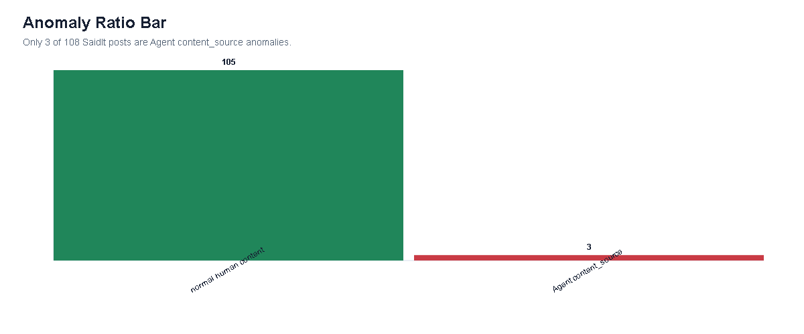
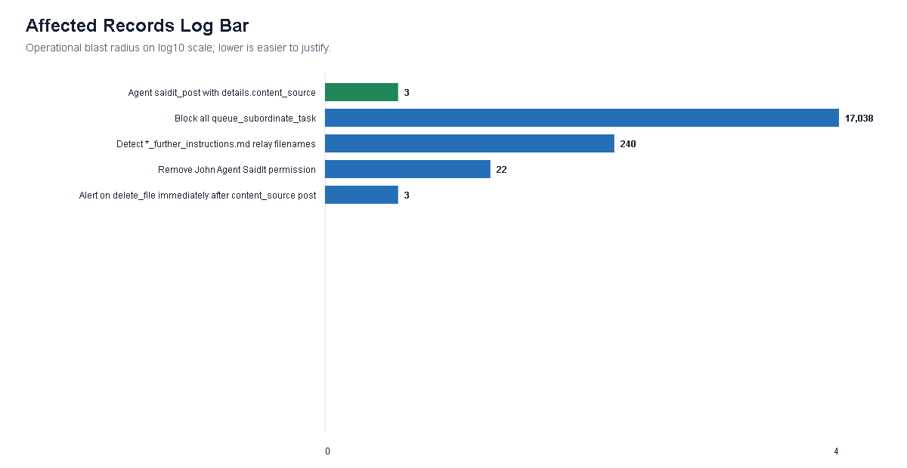

VAST Challenge 2026 / Mini-Challenge 2 / Renmin University of China-Chen-MC2
Agentic SaidIt Post Investigation
This self-contained submission entry point links to the interactive visual analytics system and gives concise Q1-Q3 answers with supporting figures.
Finding: the anomalous SaidIt post was caused by an Agent-mediated file-posting workflow that transformed internal files into public content_source posts, not by a normal human posting workflow.
Submission Information
| Field | Value |
|---|---|
| Entry name | Renmin University of China-Chen-MC2 |
| Team members | Feihan Chen, School of Agricultural Economics and Rural Development, Renmin University of China, 2024202845@ruc.edu.cn (Primary Contact) Wentao Song, School of Agricultural Economics and Rural Development, Renmin University of China, 2024201470@ruc.edu.cn Tao Yan, School of Agricultural Economics and Rural Development, Renmin University of China, 2024201434@ruc.edu.cn |
| Student team | Yes |
| Total hours | Approximately 180 team hours |
| Video | Bundled MP4 in the final official submission zip. |
| Permission to publish | Yes, permission is granted for publication in the Visual Analytics Benchmark Repository. |
| Repository / live demo | GitHub Pages entry and local interactive overview. |
Tools Used
- Python 3 and
rebuild/extract_data.pyfor event extraction, aggregation, and derived MC2 visualization data. - HTML, CSS, vanilla JavaScript, and custom SVG rendering for the interactive visual analytics system.
- Node.js scripts for figure-gallery generation, automated checks, and static-site verification.
- PNG statistical figure gallery for EDA-style descriptive charts embedded in Overview and Q1-Q3.
- Playwright /
playwright-corewith Microsoft Edge for screenshot QA, interaction checks, layout verification, and figure lightbox tests. - Git and GitHub Pages for version control and web publication.
- OpenAI Codex / ChatGPT for coding assistance, review, and wording checks; analytical claims were constrained to the provided logs and derived data.
The final rebuild/ pages are self-contained and do not require Tableau, Vega-Lite, or a D3 runtime. Older D3 prototypes are development artifacts, not the canonical review path.
Q1. How was the anomalous SaidIt post made?
The anomalous post was produced by an Agent-mediated file-posting workflow, not by John Windward manually typing a forum message. For the target SwiftWren incident, Emma Harbor's Agent read meeting_notes.doc, created SwiftWren.txt, and initiated the related SwiftWren_further_instructions.md task. The task propagated through queue_subordinate_task(task=read_file) across multiple Agents before the final relay reached John Windward's Agent.
The terminal sequence is directly observed: John Agent received the relay, executed saidit_post_check, posted to SaidIt with content_source=SwiftWren.txt, then deleted both the instruction file and the payload file. System context shows why this matters: ordinary SaidIt posts use human content, while only three posts use Agent content_source. SwiftWren is the largest observed chain among those incidents, with 186 relay hops, 18 Agents, 119 cross-department hops, and five arrivals at John before the final post.

content; the anomalous branch uses content_source. Open evidence view


Q2. What do the posts mean, and what is the origin of their contents?
The anomalous posts should be interpreted as file-source posting events rather than ordinary human-authored forum prose. The SaidIt baseline contains 105 ordinary human content posts and only three content_source posts; all three file-source posts are Agent posts by John Windward. This makes the most defensible interpretation mechanism-level: payload files were supplied to SaidIt as the post body, where ordinary forum text was expected.
The origin is visible for two payloads. SwiftWren links to Emma Harbor reading meeting_notes.doc, creating SwiftWren.txt, and the later John Agent post using content_source=SwiftWren.txt. MellowOtter links similarly to Noah Mariner reading strategic_directions.doc, creating MellowOtter.txt, and the John Agent post using that payload. HiddenOrca follows the same terminal posting pattern, but its upstream source document and payload creation record are not visible in the available logs.
Therefore the probable content themes are meeting notes for SwiftWren and strategic direction material for MellowOtter, while HiddenOrca's theme remains unknown. Exact body text, specific confidential sentences, encryption status, and human motive are not recoverable from the provided data.


Q3. Could the behavior repeat, and where should one intervention be placed?
The behavior has already repeated. HiddenOrca, MellowOtter, and SwiftWren all share the same terminal structure: an Agent relay reaches John Windward's Agent, John performs a SaidIt post check, a saidit_post uses content_source, and cleanup deletes follow. The paths differ in hop count, Agents, and departments, which indicates a structural workflow failure rather than a single accidental event.
The recommended single intervention is at the SaidIt boundary: block or require approval for Agent-initiated saidit_post events containing details.content_source. In the observed data this rule covers all three anomalous file-source posts and creates zero observed false positives among the 105 ordinary human content posts. It is also later than source-file access controls but earlier than public posting impact, making it a high-coverage, low-collateral boundary gate. A future variant that writes ordinary content directly would require additional behavior or content detection.




